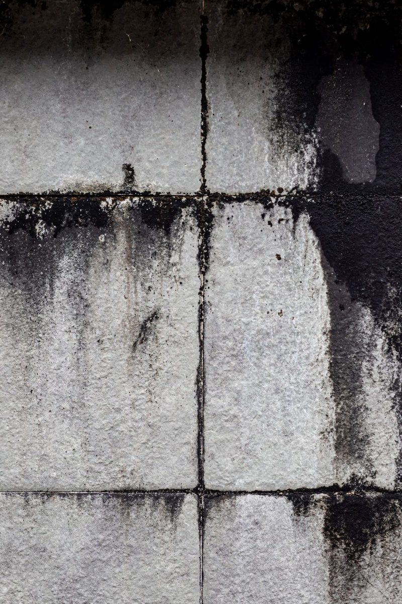

What Should I Do After a House Fire?
Wait for Plano Fire-Rescue to clear the home, then call your insurer and a fire restoration company. Board-up, roof tarping and firefighting water extraction should start within the first 24 hours.
First ResponseFirst 24 Hours: Secure, Stabilize, Extract
Once the fire department releases the property, these are the first priorities:
- Emergency board-up of broken windows and doors to keep weather, animals and intruders out
- Roof tarping over burned or vented sections to stop rain getting in
- Water extraction of firefighting water from floors, carpet and lower levels
- Drying setup to keep that water from causing mold
- Contents protection so salvageable belongings aren't damaged further
Emergency board-up and roof tarping in Plano also helps meet your insurance policy's requirement to protect the property from further damage.
Water Damage TooRemoving Firefighting and Sprinkler Water
Fire hoses can put thousands of gallons into a home. When a house is flooded by fire hoses after a kitchen fire, that water soaks drywall, insulation and floors, often mixed with soot and debris. We extract it, remove soaked materials, and set up structural drying the same way we would for any major water loss.
Fire sprinkler water cleanup in Plano follows the same process, whether a sprinkler activated during a fire or a sprinkler head broke on its own.

Soot and Smoke Residue Cleanup
Not all smoke is the same, and each type needs a different cleaning method.
| Smoke Type | Common Source | Characteristics |
|---|---|---|
| Protein smoke | Kitchen and cooking fires | Nearly invisible film, very strong odor, discolors paint |
| Wet smoke | Low-heat, smoldering fires (plastics, rubber) | Sticky, smeary residue, pungent odor |
| Dry smoke | Fast, hot fires (paper, wood) | Powdery residue, easier to clean but spreads into cracks |
| Synthetic / fuel smoke | Furniture foam, plastics, electrical | Dark, oily residue that smears if wiped wrong |
Soot residue is acidic and can discolor and etch surfaces like countertops, fixtures and finishes if left too long. Our cleaning uses dry chemical sponges, specialized cleaners and HEPA vacuuming matched to the smoke type, following the IICRC S700 standard for fire and smoke damage restoration.
Odor RemovalSmoke Odor Removal
Smoke odor hides in drywall, insulation, carpet, upholstery and HVAC ducts. Cleaning the surfaces is step one. Then we treat what's left:
- HEPA air scrubbers to remove airborne particles
- Thermal fogging that penetrates the same way smoke did
- Hydroxyl generators that break down odor molecules and can be used with people present
- Ozone treatment in unoccupied spaces where appropriate
- Sealing surfaces where odor can't be fully removed
Thermal fogging and ozone treatment for smoke smell are used together with cleaning, never as a replacement for it.
Air QualityHVAC and Duct Cleaning After a Fire
Your HVAC system pulls smoke and soot through the whole house. If it ran during or after the fire, ducts and the air handler likely need cleaning and the system should not be run until it's been checked.
KitchensKitchen Fire Restoration
Kitchen fires are the most common residential fire. Even small stovetop fires leave protein smoke residue across cabinets, walls and ceilings, along with strong odor. Kitchen fire restoration usually includes cabinet cleaning or replacement, ceiling and wall cleaning, sealing and repainting, and appliance replacement coordination.
StructureCharred Framing and Structural Repair
Burned studs and attic trusses may be cleaned and sealed if structurally sound, or replaced if not. Soda or dry-ice blasting can remove char and soot from framing. Then our reconstruction team handles framing, insulation, drywall, finishes and coordination with licensed electricians and plumbers.
BelongingsProtecting Your Belongings
Clothes, furniture, electronics, documents and keepsakes can often be cleaned and deodorized. Our contents pack-out service inventories, removes, cleans and stores belongings while your home is restored.